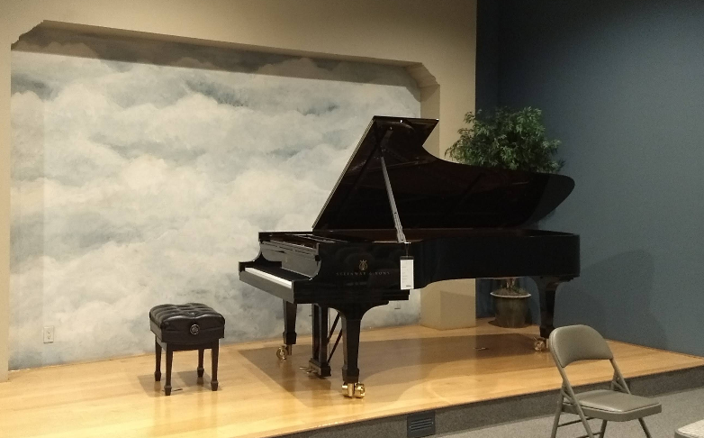

Welcome to the Le Studio
Hello! My name is Peter Le, and I am a piano teacher located in Austin, Texas. Inspired to teach and share the joy of music, I offer lessons to all students of any age who are eager and willing to learn!
General Information
Private lessons and Theory
Students and adults of all ages are eligible for lessons, from 30, 45, or 60-minute lessons with a focus on classical training; I also arrange any piece or song for students. The world is your oyster!.

Studio Recitals
Studio recitals are currently held every Spring to provide performance experience and opportunities to everyone, as well as allow them to share the culmination of their hard work!
Competitions and Theory Test
Some students can decide to participate in certain music organization events, such as auditions, festivals, and competitions. The TMTA Theory Test can also be taken for awards and to gauge students’ knowledge of theory.